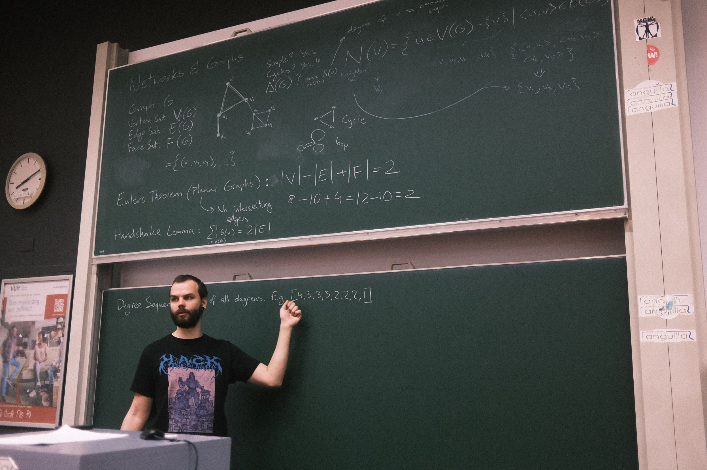

Info
- Occupation: Informatics & Mathematics Teacher, CS Student, Data Analyst/Content Manager (former), Study PR Rep (former)
- Interests: Programming, Philosophy, Art, Maths, Music, Games, D&D
Programming
Though I am most familiar with Python, which I often used for work, I have dipped my toes into many other programming languages over the years both for work and for personal interests, namely: Python, JavaScript, C/C++, Rust, MATLAB, to name a few.
I am currently teaching myself Rust through the use of The Rust Programming Language, 2nd Edition book, and rustlings exercises.
Reference Images
Music